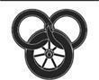

Olması Gereken
Rand gözlerini açtı ve kendisini, mevsime rağmen kaba yaprakları hâlâ yeşil olan bir meşinyaprağın dallarından süzülen gün ışığına bakarken buldu. Yaprakları sallayan rüzgârda, gece olunca kar yağacağını düşündüren bir koku vardı. Sırt üstü yattı ve ellerinin altında, üzerini örten battaniyeleri hissetti. Ceketiyle gömleği gitmiş gibiydi, ama göğsüne bir şey bağlanmıştı ve sol yanı ağrıyordu. Başını çevirdi; Min yerde oturmuş, onu izliyordu. Etek giydiğinden, neredeyse onu tanıyamayacaktı. Kız kararsızca gülümsedi.
"Min. Sensin. Nereden geldin? Biz neredeyiz?" Belleği bölük pörçük geri geldi. Eski şeyleri hatırlayabiliyordu, ama son günler kırık bir aynanın zihninde dönüp duran, açık seçik göremeden kaybolan anlık imgeler gösteren parçaları gibiydi.
"Falme'den," dedi Min. "Şimdi oranın beş gün doğusundayız, sen de bütün bu süre boyunca uyudun."
"Falme." Yeni anılar. Mat, Valere Borusu'nu üflemişti. "Egwene! O...? Onu serbest bıraktılar mı?" Nefesini tuttu.
"'Onlar' diye kimden bahsettiğini bilmiyorum, ama o serbest. Onu biz serbest bıraktık."
"Biz mi? Anlamıyorum." O özgür. En azından o-
"Nynaeve, Elayne ve ben."
"Nynaeve mi? Elayne mi? Nasıl? Hepiniz mi Falme'deydiniz?" Ayağa kalkmaya çabaladı, ama Min onu kolaylıkla geri itti ve elleri omuzlarında, gözlerini Rand'ın yüzüne dikerek öyle kaldı. "Egwene nerede?"
"Gitti." Min'in yüzü kızardı. "Hepsi gittiler. Egwene, Nynaeve, Mat, Hurin ve Verin. Aslında Hurin seni bırakmak istemedi. Tar Valon'a gidiyorlar. Egwene ile Nynaeve Kule'deki eğitimlerine dönecek, Mat ise Aes Sedailerin o hançer ile yapacakları neyse, onun için oraya gidecek. Valere Borusu'nu da yanlarına aldılar. Onu gerçekten gördüğüme inanamıyorum."
Rand, "Gitti," diye mırıldandı. "Benim uyanmamı bile beklemedi." Min'in yanaklarındaki renk koyulaştı ve kız geri çekilerek gözlerini kucağına dikti.
Rand yüzünü kaldırıp elinden geçirdi ve avuç içlerine hayretle bakarak durdu. Artık sol avucunda da sağdakinin dengi, her çizgisi düzgün ve diğeriyle aynı bir balıkçıl vardı. İlki balıkçıl yolunu çizmek; ikincisi hakiki olduğunu ilan etmek için. "Hayır!"
"Gittiler," dedi. "'Hayır' demek bunu değiştirmez."
Rand başını iki yana salladı. Bir şey yan tarafındaki ağrının önemli olduğunu söylüyordu. Yaralandığını hatırlamasa da önemliydi. Yarasına bakmak için battaniyeleri kaldıracak oldu, ama Min ellerine vurarak onu engelledi.
"Ona zarar verirsin. Zaten tamamen iyileşmedi. Verin Şifa'yı denedi, ama olması gerektiği gibi işlemediğini söyledi." Dudağını kemirerek durakladı. "Moiraine, Nynaeve'in bir şey yapmış olması gerektiğini, yoksa biz seni Verin'e taşıyana kadar yaşamayacağını söylüyor, ama Nynaeve mum bile yakamayacak kadar korktuğunu söylüyor. Yaranda... bir terslik var. Doğal yollarla iyileşmesini beklemen gerekecek."
"Moiraine burada mı?" Rand acı bir kahkaha attı. "Verin gitti, dediğinde ben de yine Aes Sedailerden kurtulduğumu sanmıştım."
"Buradayım," dedi Moiraine. Baştan aşağı maviler içinde ve Beyaz Kule'de duruyormuş gibi sakince gelip Rand'ın başında durdu. Min Aes Sedai'ye kaşlarını çatarak bakıyordu. Rand Min'in kendisini Moiraine'den korumak istediği gibi tuhaf bir hisse kapıldı.
"Keşke burada olmasaydın," dedi Aes Sedai'ye. "Bana sorarsan, gizlendiğin yere gidip orada kalabilirsin."
"Gizlenmiyordum," dedi Moiraine sakince. "Burada Tümentepe'de ve Falme'de elimden geleni yapıyordum. Yapabildiklerim hayli az olsa da pek çok bilgi edindim. Seanchanlar onları Yularlı Kişilerle birlikte gemilere bindirmeden önce iki kız kardeşimi kurtarmayı başaramadım, ama elimden geleni yaptım."
"Elinden geleni. Verin'i bana çobanlık etsin diye gönderdin, ama ben koyun değilim, Moiraine. İstediğim yere gidebileceğimi söylemiştin, ben de senin olmadığın yere gitmeye niyetliyim."
"Verin'i ben göndermedim." Moiraine kaşlarını çattı. "Onu kendi başına yaptı. Seninle ilgilenen pek çok kişi var, Rand. Fain seni ya da sen onu buldunuz mu?"
Rand ani konu değişikliğinden afallamıştı. "Fain mi? Hayır. Amma da kahramanım. Egwene'i kurtarmaya çalıştım, ama Min bunu benden önce yaptı. Fain, onunla yüzleşmezsem Emond Meydanı'na zarar vereceğini söyledi ve onu görmedim bile. O da Seanchanlarla mı gitti?"
Moiraine başını iki yana salladı. "Bilmiyorum. Keşke bilseydim. Ama onu bulmaman daha iyi olmuş, en azından onun ne olduğunu öğrenmeden."
"O bir Karanlıkdostu."
"Ondan fazlası var. Ondan daha kötüsü. Padan Fain ruhunun derinliklerine kadar Karanlık Varlık'ın yaratığıydı, ama Shadar Logoth'ta, Gölge'yle savaşırken Gölge'nin kendisi kadar alçaklık eden Mordeth'le çarpıştığını sanıyorum. Mordeth tekrar bir insan bedenine sahip olmak için Fain'in ruhunu tüketmeye çalıştı, ama Karanlık Varlık'ın doğrudan dokunduğu bir ruh buldu ve bunun sonucunda ortaya çıkan... Bunun sonucunda ortaya çıkan ne Padan Fain, ne Mordeth, ama çok daha kötü, ikisinin bir karışımıydı. Fain -ona öyle diyelim- inanamayacağın kadar tehlikeli. Böyle bir karşılaşmadan sağ çıkmayabilirdin ve çıksaydın bile, Gölge'ye dönmekten beter olabilirdin."
"O hayattaysa, Seanchanlarla gitmediyse, ben onunla-" Moiraine pelerininin altından Rand'ın balıkçıl nişanlı kılıcını çıkarınca sözünü yarım bıraktı. Kılıç kabzanın yaklaşık otuz santim uzağında, erimiş gibi sona eriyordu. Anılar kafasına doluştu. "Onu öldürdüm," dedi usulca. "Bu kez onu öldürdüm."
Moiraine, mahvolmuş kılıcı, artık olduğu üzere işe yaramaz bir şey gibi kenara koyup ellerini birbirine sildi. "Karanlık Varlık bu kadar kolay öldürülmez. Falme'nin üzerinde gökyüzünde görünmesi bile, kaygı verici olmaktan öte. İnandığımız gibi bağlı olsaydı, bunu yapamaması gerekirdi. Ya değilse, neden hepimizi yok etmedi?" Min huzursuzca kımıldandı.
"Gökyüzünde mi?" dedi Rand hayretle.
"İkiniz de," dedi Moiraine. "Savaşınız gökyüzünde, Falme'deki herkesin gözlerinin önünde oldu. Duyduklarımın yarısında gerçeklik payı varsa, Tümentepe'nin diğer şehirlerindeki insanların da."
"Biz -biz hepsini gördük," dedi Min belli belirsiz bir sesle. Bir elini teskin edercesine Rand'ın ellerinden birinin üzerine koydu.
Moiraine tekrar pelerininin içine uzandı ve Falme'deki sokak ressamlarının kullandığı iri sayfalar cinsinden, kıvrık bir parşömen çıkardı. Parşömeni açtığında tebeşirler biraz birbirine karışmıştı, ama resim hâlâ yeterince açıktı. Yüzü salt alevden oluşan bir adam bir asayla şimşeklerin dans ettiği bulutların arasında kılıç tutan başka bir adamla dövüşüyor ve arkalarında Ejder'in sancağı dalgalanıyordu. Rand'ın yüzü kolaylıkla tanınabiliyordu.
"Bunu kaç kişi gördü?" diye sordu. "Yırt şunu. Yak."
Aes Sedai parşömenin tekrar kıvrılmasına izin verdi. "Bir işe yaramaz, Rand. Onu iki gün önce, içinden geçtiğimiz bir köyden aldım. Bunlardan yüzlerce, belki de binlerce var ve her yerde Ejder'in Falme semalarında Karanlık Varlık'la nasıl cenk ettiği anlatılıyor."
Rand Min'e baktı. Min gönülsüzce başını sallayıp Rand'ın elini sıktı. Kız korkmuş görünüyordu, ama irkilmemişti. Egwene bu yüzden mi gitti acaba. Gitmekte haklıydı.
"Desen kendisini senin etrafında daha da sıkı dokuyor," dedi Moiraine. "Bana şimdi her zamankinden de çok ihtiyacın var."
"Sana ihtiyacım yok," dedi Rand haşin bir sesle, "ve seni istemiyorum. Bununla hiçbir ilgim olsun istemiyorum." Kendisine Lews Therin diye hitap edildiğini hatırlıyordu; sırf Ba'alzamon değil, Şahinkanadı Artur tarafından. "İstemiyorum. Işık adına, Ejder'in Dünyayı tekrar Kırması, her şeyi paramparça etmesi bekleniyor. Ben Ejder olmayacağım."
"Sen neysen osun," dedi Moiraine. "Daha şimdiden dünyayı karıştırıyorsun. Kara Ajah iki bin yıldır ilk kez yüzünü gösterdi. Arad Doman ile Tarabon savaşın eşiğindeydi ve Falme'nin haberleri onlara ulaştığında daha da kötüsü olacak. Cairhien'de iç savaş var."
Rand, "Ben Cairhien'de hiçbir şey yapmadım," diye itiraz etti. "Onun suçunu bana atamazsın."
"Hiçbir şey yapmamak her zaman Büyük Oyun'da kullanılan bir hile olmuştur," dedi Moiraine içini çekerek, "özellikle de şimdi oynandığı şekliyle. Sen kıvılcım oldun ve Cairhien bir Havaifişekçi'nin havaifişeği gibi patladı. Falme'nin haberi Arad Doman ve Tarabon'a ulaşınca ne olacak sanıyorsun? Kendisine Ejder diyen herhangi bir adama bağlılığını ilan etmeye gönüllü insanlar olmuştur, ama daha önce hiç böyle alametler görmemişlerdi. Daha fazlası da var. İşte." Rand'ın göğsüne bir kese fırlattı.
Rand keseyi açmadan önce bir an tereddüt etti. Kesenin içinde siyah beyaz sırlı çömleği andıran bir şeyin parçaları vardı. Buna benzer bir şeyi daha önce de görmüştü. "Karanlık Varlık'ın hapishanesindeki mühürlerden biri daha," diye mırıldandı. Min yüksek sesle nefes aldı, artık eli teselli vermekten çok, teselli arıyordu.
"İki," dedi Moiraine. "Artık yeni mührün üçü kırık. Bir tanesi bendeydi, birini de Yüce Lord'un Falme'deki meskeninde buldum. Yedisi birden kırıldığında ya da belki daha önce, insanların Yaratan'ın yaptığı hapishaneye deldikleri deliğin üzerine kapattıkları yama yana atılacak ve Karanlık Varlık bir kez daha elini o delikten uzatıp dünyaya dokunabilecek. Dünyanın tek umudu da Yenidendoğan Ejder'in orada olup onun karşısına çıkabilmesi olacak."
Min Rand'ın battaniyeleri üzerinden atmasına engel olmaya çalıştı, ama Rand onu nazikçe yana itti. "Yürümeye ihtiyacım var." Min kalkmasına yardım etti, ama yarasını kötüleştireceğine dair bir sürü iç çekiş ve homurdanma eşliğinde. Göğsünün etrafına bandajlar sarıldığını fark etti. Min battaniyelerden birini pelerin gibi Rand'ın omuzlarına attı.
Rand bir an durup yerdeki balıkçıl nişanlı kılıca, ondan artakalanlara baktı. Tam'in kılıcı. Babamın kılıcı. Gönülsüzce, hayatında hiçbir şeye karşı olmadığı kadar gönülsüzce Tam'in gerçek babası olduğunu öğreneceği umudundan vazgeçti. Sanki kendi yüreğini koparıp atıyordu. Ama bu Tam hakkındaki hislerini değiştirmedi, Emond Meydanı da bildiği tek yuvaydı. Önemli olan Fain. Geriye bir tek görevim kaldı. Onu durdurmak.
İki kadın onu kamp ateşlerinin çoktan yakıldığı, sıkıştırılmış topraktan bir yola pek de uzak olmayan alana koluna girerek götürmek zorunda kaldı. Loial de orada, Günbatımının Ötesine Yelken Açmak adlı bir kitap okuyor, Perrin ise ateşlerden birine gözlerini dikmiş, bakıyordu. Shienarlılar akşam yemekleri için hazırlık yapıyordu. Lan bir ağacın altına oturmuş, kılıcını biliyordu; Muhafız Rand'a dikkatli bir bakış attıktan sonra başını sallayarak selam verdi.
Başka bir şey daha vardı. Kampın ortasında Ejder sancağı rüzgârda dalgalanıyordu. Bir yerlerden Perrin'in sürgününün yerine geçecek düzgün bir sopa bulmuşlardı.
Rand, "Bu ortalıkta, gelen geçen herkesin görebileceği yerde ne arıyor?" diye sordu.
"Saklaman için artık çok geç, Rand," dedi Moiraine. "Saklaman için her zaman çok geçti."
"'Buradayım' diyen bir tabela dikmeye de gerek yok. Birisi o sancak yüzünden beni öldürürse Fain'i asla bulamam." Loial ve Perrin'e baktı. "Kaldığınız için memnunum. Kalmasanız da anlardım."
"Neden kalmayayım ki?" dedi Loial. "Doğru, sen inandığımdan da fazla ta'veren'sin, ama hâlâ dostumsun. Hâlâ dostum olduğunu umuyorum." Kulakları kararsızca seğirdi.
"Öyleyim," dedi Rand. "Yanımda olmak senin için güvenli olduğu sürece, hatta ondan sonra da." Ogier'in gülümsemesi neredeyse yüzünü ikiye bölecekti.
"Ben de kalıyorum," dedi Perrin. Sesinde bir razı olma veya teslimiyet vardı. "Çark bizi Desen'e sıkı sıkıya dokuyor, Rand. Emond Meydanı'ndayken kimin aklına gelirdi?"
Shienarlılar Rand'ın etrafına toplanıyordu. Rand hepsinin dizlerinin üzerine çöktüğünü görerek şaşırdı. Hepsi onu izliyordu.
"Sana bağlılık yemini etmek istiyoruz," dedi Uno. Onunla birlikte diz çöken diğerleri başlarıyla onayladılar.
"Sizin yeminleriniz Ingtar'a ve Lord Agelmar'a," diye itiraz etti Rand. "Ingtar iyi bir şekilde öldü, Uno. Bizler Boru'yla birlikte kaçabilelim diye canını verdi." Geri kalanları ne ona, ne de başkasına anlatmaya gerek yoktu. Ingtar'ın Işık'ı tekrar bulduğunu ümit ediyordu. "Fal Dara'ya döndüğünüzde bunu Lord Agelmar'a anlatın."
"Söylenenlere göre," dedi tek gözlü adam dikkatle, "Ejder Yeniden doğduğunda tüm yeminleri bozacak, tüm bağları parçalayacaktır. Artık bizi tutan hiçbir şey kalmadı. Yeminlerimizi sana etmek istiyoruz." Kılıcını çekip kabzası Rand'a bakacak şekilde önüne koydu ve Shienarlıların geri kalanı da aynısını yaptılar.
"Sen Karanlık Varlık'la savaştın," dedi Masema. Masema ona bir Işık imgesi görürmüş gibi bakıyordu. "Seni gördüm Lord Ejder. Gördüm. Ölene kadar senin adamınım." Kara gözleri şevkle parlıyordu.
"Seçim yapmalısın, Rand," dedi Moiraine. "Dünya sen kırsan da kırmasan da kırılacak. Tarmon Gai'don gelecek ve sırf o bile dünyayı paramparça etmeye yetecek. Hâlâ olduğun şeyden saklanmaya çalışıp dünyayı Son Savaş'la savunmasız yüzleşmeye mi terk edeceksin? Seçimini yap."
Hepsi onu izliyor, onu bekliyordu. Ölüm tüyden hafif, görev dağdan ağır. Kararını verdi.